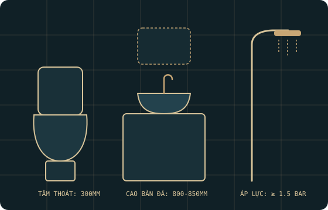
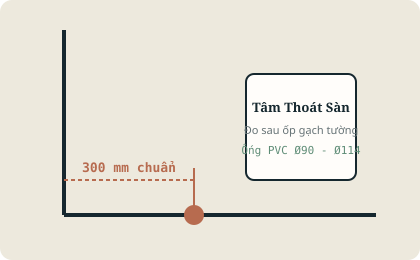
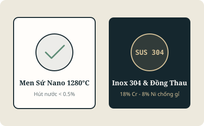
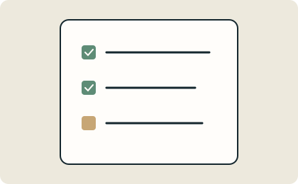

CỐT LIỆU & BỀ MẶT
Men sứ Nano nung 1280°C & độ hút nước dưới 0.5%
Vì sao nhiệt độ lò nung và lớp men tuyết quyết định khả năng chống bám ố vàng của bồn cầu 1 khối và chậu rửa mặt lavabo sau 5–10 năm sử dụng.
Một bộ thiết bị vệ sinh vận hành êm, xả sạch và bền men suốt 10 năm phụ thuộc vào sự khớp nối chính xác giữa tâm thoát sàn, áp lực cột nước và cốt liệu sứ – kim loại ngay từ khâu khảo sát thô tại Thiết Bị Vệ Sinh Giá Kho.

Đo chính xác tâm thoát bồn cầu (300mm) và khoảng cách tim cấp nóng lạnh (150mm) sau khi ốp gạch.
Ưu tiên sứ nung 1280°C phủ men Nano kháng khuẩn, sen vòi inox SUS 304 và tủ nhựa PVC đặc chống trương nở.
Chọn cơ chế xả xoáy Siphon hoặc sen cây bát lớn tương thích với chiều cao bồn chứa nước thực tế của công trình.
Tránh tình trạng mua thiết bị về không lắp vừa ống thoát hoặc nước chảy yếu do chọn sai cấu hình van trộn.
Vì sao nhiệt độ lò nung và lớp men tuyết quyết định khả năng chống bám ố vàng của bồn cầu 1 khối và chậu rửa mặt lavabo sau 5–10 năm sử dụng.
Cách nhận diện thân sen cây tắm đứng chuẩn SUS 304 không nhiễm từ, lõi van chia nước Ceramic và tủ chậu lavabo PVC chịu ẩm 100%.
Hướng dẫn đo khoảng cách từ mặt gạch hoàn thiện đến tâm ống thoát sàn cho bồn cầu thông minh và ngưỡng áp lực tối thiểu cho combo thiết bị vệ sinh.

Chốt thông số theo đúng trình tự thi công giúp loại bỏ 95% chi phí đục sửa sàn hoặc đổi trả thiết bị tại công trình.
Chọn loại mặt bằng thực tế của bạn để xem cấu hình kích thước và nhóm vật liệu khuyến nghị.
Với phòng tắm dưới 3m² hoặc WC dưới gầm cầu thang, mục tiêu số một là giải phóng diện tích sàn để thoát nước nhanh và dễ xoay trở. Nên chọn bồn cầu 1 khối thân ngắn (dài 630–660mm) kết hợp chậu lavabo treo tường hoặc tủ chậu ngang 500–600mm.
Xem bảng kích thước tối thiểu →Phòng tắm chung cư tiêu chuẩn thường phân tách rõ khu khô (bồn cầu + lavabo) và khu ướt (buồng tắm kính). Giải pháp tối ưu là sử dụng bàn đá chống trầy kết hợp lavabo đặt bàn hoặc tủ chậu PVC 800mm cùng sen cây tắm đứng nóng lạnh.
Đọc chuyên đề chọn Combo đồng bộ →Không gian phòng tắm Master cho phép lắp đặt bồn cầu thông minh tự động đóng mở nắp, sưởi ấm bệ ngồi và khử mùi than hoạt tính. Cần chuẩn bị sẵn ổ cắm điện chống ẩm IPX4 có dây tiếp đất cách tâm bồn cầu 300–400mm.
Xem tiêu chuẩn men sứ & điện tử →Đối với chuỗi căn hộ dịch vụ, khách sạn mini hoặc nhà cho thuê, yếu tố quan trọng nhất là bộ xả bền, lớp men ít bám cặn để giảm công vệ sinh và thân vòi inox 304 không bong tróc lớp mạ khi tiếp xúc hóa chất tẩy rửa.
Mở checklist kiểm tra số lượng lớn →Bộ tài liệu chuẩn hóa các thông số cốt liệu, kích thước lắp đặt và quy trình nghiệm thu tại hiện trường.

Phân tích cấu trúc xương sứ nung nhiệt độ cao, cách thử inox SUS 304 và tiêu chuẩn tấm nhựa PVC chịu nước trong môi trường ẩm.
Đọc tài liệu →Bảng tra cứu chuẩn tâm thoát 300mm, cao độ đặt mặt bàn đá lavabo 800–850mm và khoảng cách tim cấp nước nóng lạnh.
Đọc tài liệu →
Danh mục kiểm tra tương tác từ giai đoạn đi ống chờ đến khi thử nước, kèm mẫu phiếu thông số kỹ thuật để sao chép nhanh.
Mở công cụ checklist →Các bài phân tích chuyên sâu giúp gia chủ đối chiếu thông số kỹ thuật, bóc tách cấu phần và kiểm soát ngân sách hoàn thiện phòng tắm.

Phân tích cấu trúc một gói combo phòng tắm 9–11 món, cách kiểm tra phụ kiện ẩn (dây cấp, xi phông, van T) và phương pháp đối chiếu ngân sách thực tế.
Đọc chuyên đề ↗
Phân tích cốt tấm nhựa PVC đặc tỷ trọng cao, bản lề giảm chấn Inox 304, bảng quy cách tủ 600–1200mm và chuẩn ống chờ thoát tường 500–550mm.
Đọc chuyên đề ↗
So sánh thân vòi Inox SUS 304 đúc nguyên khối với đồng thau mạ Cr-Ni, quy chuẩn tim ống 150mm và giải pháp tối ưu áp lực nước cho bát sen trần.
Đọc chuyên đề ↗
Phân tích cốt nhựa Acrylic gia cường sợi thủy tinh, bảng kích thước bồn oval – góc – massage và quy chuẩn nguồn điện chống giật ELCB.
Đọc chuyên đề ↗
Đối chiếu chậu 1 ngăn lớn, 2 ngăn đều và 2 ngăn lệch; đánh giá đệm chống ồn, sơn chống đổ mồ hôi đáy chậu và kỹ thuật cắt đá dương/âm bàn.
Đọc chuyên đề ↗
Phân biệt vòi nóng lạnh, vòi lạnh và vòi xoay 360; hướng dẫn lắp đặt lỗ chậu Ø35mm, chia chữ T và vệ sinh lưới lọc đầu vòi.
Đọc chuyên đề ↗
Quy tắc phối vòi cổ thấp 20cm, cổ cao 30cm và âm tường với chậu đặt bàn/âm bàn; đánh giá mẫu Navier NV-754 và NV-752 đúc Inox 304.
Đọc chuyên đề ↗
Bảng so sánh bồn cầu 1 khối, 2 khối, treo tường, bồn cầu trứng và thông minh; hướng dẫn nghiệm thu gioăng cao su non và tâm thoát 300mm.
Đọc chuyên đề ↗
Hướng dẫn kiểm tra đường kính cổ ngỗng, lớp tráng men trong lòng ống thoát và dung sai cho phép khi lắp đặt con thỏ chống hôi.
Xem thông số kỹ thuật ↗Tổng hợp những vướng mắc thực tế khi lắp đặt và vận hành thiết bị phòng tắm gia đình.
Thông số 300mm tiêu chuẩn bắt buộc được tính từ bề mặt gạch ốp tường hoàn thiện đến chính giữa tâm ống thoát sàn. Nếu đo từ tường gạch xây thô, thợ điện nước cần cộng thêm độ dày lớp vữa trát và gạch ốp (thường đặt ở mức 315–320mm từ tường thô) để khi ốp gạch xong đạt chuẩn 300mm.
Sen cây tắm đứng có bát sen trần đường kính lớn (200–250mm) nên yêu cầu áp lực nước tối thiểu từ 1.2 đến 1.5 bar (tương đương độ cao từ đáy bồn chứa nước xuống vị trí vòi sen từ 8–10m, tức khoảng 2.5 đến 3 tầng lầu). Với phòng tắm ở tầng áp mái ngay sát dưới bồn nước, gia chủ nên lắp thêm bơm tăng áp biến tần hoặc chọn dòng sen tắm tăng áp chuyên dụng.
ơn 85% nguyên nhân mùi hôi bốc lên từ chân bồn cầu không phải do bản thân thân sứ mà do lắp thiếu hoặc lắp lệch gioăng cao su non (wax ring / con thỏ chuyển bậc) giữa đế thải bồn cầu và miệng ống PVC dưới sàn, hoặc không chừa lỗ thoát khí thông hơi cho trục ống thải chính.
Tấm nhựa PVC đặc mật độ cao (tỷ trọng ≥ 0.55–0.65 g/cm³) hoàn toàn không thấm nước và không trương nở như gỗ công nghiệp MDF. Tuy nhiên, để cánh tủ không xệ, cần sử dụng bản lề giảm chấn bằng inox 304 kết hợp vít bắt chuyên dụng cho cốt nhựa đặc.
Sau khi đã xác định chuẩn kích thước đường ống chờ và nhóm chất liệu phù hợp, bạn có thể tra cứu hình ảnh thực tế, bản vẽ kỹ thuật và cấu hình thiết bị vệ sinh chính hãng tại hệ thống showroom TPHCM.